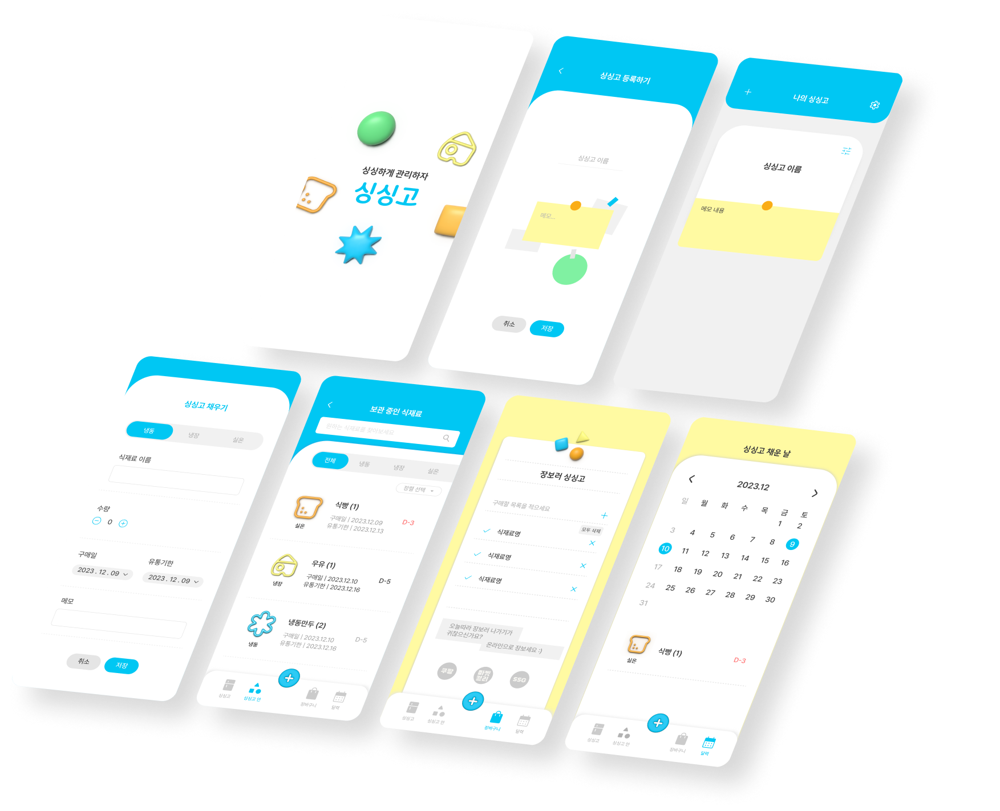
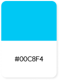
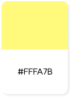
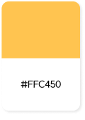
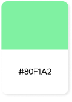

Web App
싱싱고'
싱싱고는 React를 응용하여 냉장고 속 식재료의 관리에 도움을 주는 Web App입니다
#React #JavaScript #UI디자인 #Publishing #SVG #Back
Team Projact | 2023.12.01 ~2023.12.15

Overview
누구나 한번 쯤은 냉장고 안에 혹은 쟁여 놓은 식재료의 소비기한을 놓쳐버린 경험이 있을 것입니다. 이제부터는 적어도 소비기한 때문에 음식이 버려지는 것을 최소화할 수 있도록 도움을 주고
싶었습니다.
그리하여 기획 의도에 맞춰 수업 시간에 배운 React를 응용해 완성도 있는 UI를 갖춘 웹 어플 '싱싱고'를 완성했습니다.
My Part
- UI 디자인 총괄
- Publishing
- 발표 PPT 제작
Time Line
- 기획 아이디어 선정 후 사용자 시나리오 및 워크플로우를 작성해 어플 기능과 흐름 파악
- 워크플로우를 기반으로 기능적 / 비기능적 요구사항을 구체적으로 분석
- 페이지 구성에 맞게 프로토타입 작업 후 디렉토리 구조 작성해 개발 폴더 구조 파악
- 간단한 구조 작업과 기본적인 기능 구현
- 디자인 최종 완성후 본격적인 기능 구현과 퍼블리싱 작업
- 계속되는 기능 오류를 팀원들과 소통하며 해결하여 '싱싱고' 완성
Style Guide
-
Keyword
#맑은 #싱그러운 #귀여운 #냉장고 #메모 #마그넷
-
Color Palette
메인 컬러를 맑은 하늘색으로 선정하여 생기있는 분위기 연출
    -
Fonts
본문 | Pretendard / 프리텐다드
font-family: "Pretendard Variable"
포인트 | SOYOMaple / 소요단풍체
font-family: 'SOYOMapleBoldTTF';
-
Fonts Style
-
싱싱하게 관리하자 '싱싱고' 제목
1.3rem bold
-
싱싱하게 관리하자 '싱싱고' 제목
1.3rem 500
-
싱싱하게 관리하자 '싱싱고' 본문
1.1rem 400
-
싱싱하게 관리하자 '싱싱고' 작은
0.9rem 400
-
Problem Solving
-
Success :)
-
보관 중인 식재료 목록을 새로고침 하면 등록했던 데이터가 초기화되는 문제 발생 -> 로컬스토리지에 데이터를 저장하여 성공!
-
초기 디자인에서 사용한 색감의 대비가 약하고, 전체적으로 통일성이 없어 컨셉이 명확하지 않았다는 피드백-> 메인 컬러의 채도를 높이고, 기존 작업했던 일러스트를 빼고 마그넷 컨셉으로 통일하여 디자인 확정!
-
식재료 목록에서 식재료 삭제 버튼을 누르면 목록이 랜덤으로 삭제되는 문제
-> uuid로 고유의 id값을 주어 삭제 이벤트 함수에서 선택한 아이템의 id를 찾아 실행하여 성공!
-
GitHub-Pages에 테스트 배포 시 이미지가 안 뜨는 문제 발생
-> images 폴더가 절대 경로에 있었으나 src 경로 작성 시 /앞에 붙어있던 .을 빼서 해결!
-
보관 중인 식재료 목록을 새로고침 하면 등록했던 데이터가 초기화되는 문제 발생
-
Failure :(
-
table로 캘린더를 직접 만들어서 저장된 데이터를 가져오려고 시도 했으나 실패
-> JS FullCalendar 플러그인을 활용해 대체하였으나 CSS 작업의 한계가 있어 엉성한 레이아웃으로 완성
-
소비기한 디데이 임박 시 폰트 색상이 변경되는 기능을 if 문으로 구현하려 했지만 실패
-> css 우선순위도 확인해 보고, console을 통해 받아오는 데이터도 확인했지만 결국 원인을 찾지 못해 해결 실패
-
table로 캘린더를 직접 만들어서 저장된 데이터를 가져오려고 시도 했으나 실패
Review
-
Good
- 팀원들끼리 역할 분담이 적절하게 이뤄지면서 서로의 부족한 부분을 채워줌
- 진행 과정에서 막히거나 오류가 발생했을 때 서로 의견을 나누며 해결해 나아감
- 계획했던 기능의 대부분을 구현하고, 안정감있는 UI 디자인을 한 점
-
Bad
- 기능 구현은 했지만 데이터 저장을 로컬로 대체하면서 테이터 관리에 아쉬움이 남음
- 식재료 목록에서 수정을 해도 데이터 업데이트가 안 되는 문제로 부분별로 나눴던 컴포넌트를 합치게 된 점이 매우 아쉬움
- 캘린더 플러그인을 사용하면서 플러그인의 기본 성격이 있어 CSS 수정에 한계가 있었음
-
Takeaway
- 퍼블리싱까지 고려해서 디자인을 하다보니 그냥 하는 것보다 훨씬 디자인 과정이 머리가 아팠지만 그래도 퍼블리싱을 생각하면서 디자인을 할 수 있게 뿌듯했음
- 무언가를 기획하는 것을 어려워하는 편인데, 이번 프로젝트를 통해 생각을 넓혀가는 방법을 조금은 터득한 것 같아 뿌듯함
- 개개인의 역량이 아무리 부족해도 채워줄 수 있는 팀원과 함께라면 뭐든 할 수 있겠다는 믿음이 생김